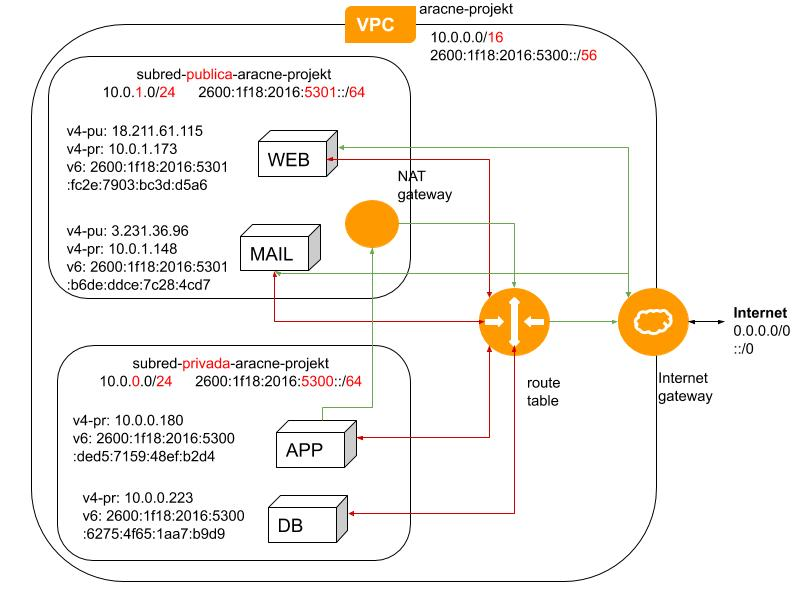

{% extends "base.html" %}
{% block content %}
{% if session['logged_in'] %}
Diagrama de red
VPC
Virtual Private Cloud por sus siglas VPC, puede controlar todos los aspectos
del entorno de red virtual, incluida la selección de su propio rango de direcciones IP,
la creación de subredes y la configuración de tablas de ruteo y gateways de red.

Subred Pública
Las instancias de la subred pública pueden enviar tráfico de salida directamente a Internet.
Un ejemplo común es un sitio web multinivel, con los servidores web en una subred pública.
Puede configurar la seguridad y el direccionamiento para que los servidores web se puedan
comunicar con los servidores de base de datos.
Subred Privada
las instancias de la subred privada pueden obtener acceso a Internet utilizando una
gateway de traducción de dirección de red (NAT) que reside en la subred pública.
Los servidores de base de datos pueden conectarse a Internet para las actualizaciones de software
a través de la gateway NAT, pero Internet no puede establecer conexiones a los servidores de base de datos..
Puerta de enlace NAT
Puedes utilizar una gateway de conversión de las direcciones de red (NAT) para permitir
a las instancias de la subred privada conectarse a Internet
a la vez que se impide a Internet iniciar una conexión a esas mismas instancias.
Tabla de ruteo
La tabla de enrutamiento, en realidad, es una estructura jerárquica que se usa para acelerar
el proceso de búsqueda cuando se ubican rutas y se reenvían paquetes.
{% else %}
Sin autenticar!
{% endif %}
{% endblock %}